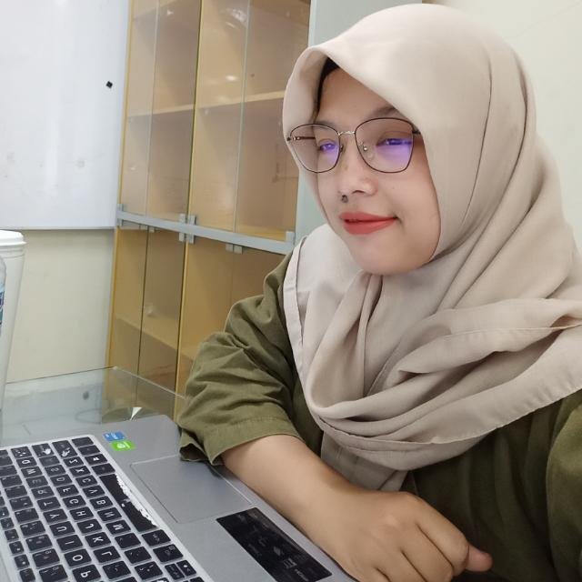

Profile Picture
> Profil
Hello, nama saya Nida Khairunnisa Kusumawardhani. Teman-teman bisa memanggil saya Nida. Saya berkuliah S2 di Telkom University Jurusan Informatika dengan peminatan sosial computing. Saya suka belajar Computer Programming, terutama mempelajari website dengan menggunakan HTML, CSS dan Javascript karena dengan mempelajari website saya bisa dengan mudah memperkenalkan diri kepada teman-teman dan saya juga bisa personal branding. Hobi saya wisata kuliner dan memasak, jika saya memasak nanti teman-teman coba ya makanan saya.
Social Media
linkedin: Nida Khairunnisa Kusumawardhaniinstagram: nida.khairunnisa